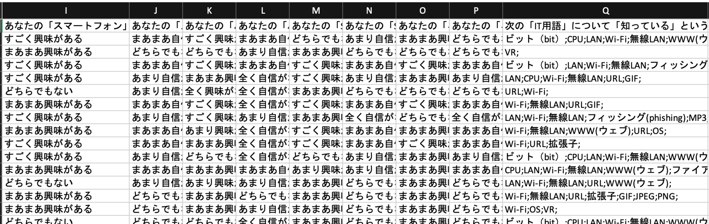

質問紙データの分析
データ処理
Microsoft Forms によるデータは, 複数選択可能な質問項目への回答が一つのセルに「;」を用いて区切られて記入されるなどの特徴があります.

図は, データを表計算ソフトで開いたものの一部です. 列 I から P は 5 段階で答える選択式の質問で, 選んだ選択肢の文字列がそのまま入っています. 列 Q は複数選択式の質問で, 選んだ選択肢が「;」で区切られて 1 つのセルに入っています.
分析の際には, これらの情報を利用しやすいように変形する必要があります. ここでは, 練習も兼ねて一通りの処理を体験してみましょう.
データ処理の手順はコード例で再現できます. 内容を確認して自力でできると感じた方はデータ処理の解説を飛ばして構いません.
まずはデータの形式を確認してみましょう.
import pandas as pd
import matplotlib.pyplot as plt
import matplotlib_fontja
import seaborn as sns
import scipy.stats as st
import numpy as np
#グラフの保存場所
dir_fig = './result/fig/'
#グラフの設定
plt.style.use('ggplot') #グラフスタイル
plt.rcParams['figure.figsize'] = [12, 9] #グラフサイズ
plt.rcParams['font.size'] = 14 #フォントサイズ
#------------------------------------------------------------------
#データの読み込み
#------------------------------------------------------------------
df = pd.read_csv('./data/questionnaire_sample_original.csv')
print(df.columns)
"""
Index(['あなたの「スマートフォン」に対する印象について、どれくらいあてはまるかを教えてください。',
'あなたの「スマートフォン」に対する操作や知識について、どれくらい自信があるかを教えてください。',
'あなたの「パソコン」に対する印象について、どれくらいあてはまるかを教えてください。',
'あなたの「パソコン」に対する操作や知識について、どれくらい自信があるかを教えてください。',
'あなたの「SNS（FacebookやInstagramなど）」に対する印象について、どれくらいあてはまるかを教えてください。',
'あなたの「SNS（FacebookやInstagramなど）」に対する操作や知識について、どれくらい自信があるかを教えてください。',
'あなたの「ネットを使ったコミュニケーション（LINEやTwitterなど）」に対する印象について、どれくらいあてはまるかを教えてください。',
'あなたの「ネットを使ったコミュニケーション（LINEやTwitterなど）」に対する操作や知識について、どれくらい自信があるかを教えてください。',
'次の「IT用語」について「知っている」という言葉にチェックをしてください（知っているものすべてにチェック）。',
'Windowsの操作や事柄について「身に付いている」ものにチェックをしてください（身に付いているものすべてにチェック）。',
'電子メールの操作や事柄について「身に付いている」ものにチェックをしてください（身に付いているものすべてにチェック）。',
'WWW(ウェブ)の操作や事柄について「身に付いている」ものにチェックをしてください（身に付いているものすべてにチェック）。',
'Wordの操作や事柄について「身に付いている」ものにチェックをしてください（身に付いているものすべてにチェック）。',
'Excelの操作や事柄について「身に付いている」ものにチェックをしてください（身に付いているものすべてにチェック）。',
'PowerPointの操作や事柄について「身に付いている」ものにチェックをしてください（身に付いているものすべてにチェック）。',
'Officeの応用的な操作や事柄について「身に付いている」ものにチェックをしてください（身に付いているものすべてにチェック）。',
'情報倫理について「身に付いている」ものにチェックをしてください（身に付いているものすべてにチェック）。'],
dtype='object')
"""このままでは列名が長すぎてプログラムが書きにくいので, 列名を順に Q1~Q17 の連番に変更します.
今回は辞書型で連番を作成するために, 組み込み関数の enumerate() を利用しています.
new_columns = dict([(t,'Q'+str(n + 1))for (n,t) in enumerate(df.columns)])
"""
一つ一つ手書きすると以下のようになる.
new_columns = {'あなたの「スマートフォン」に対する印象について、どれくらいあてはまるかを教えてください。':'Q1'
,'あなたの「スマートフォン」に対する操作や知識について、どれくらい自信があるかを教えてください。':'Q2'
,'あなたの「パソコン」に対する印象について、どれくらいあてはまるかを教えてください。':'Q3'
,'あなたの「パソコン」に対する操作や知識について、どれくらい自信があるかを教えてください。':'Q4'
,'あなたの「SNS（FacebookやInstagramなど）」に対する印象について、どれくらいあてはまるかを教えてください。':'Q5'
,'あなたの「SNS（FacebookやInstagramなど）」に対する操作や知識について、どれくらい自信があるかを教えてください。':'Q6'
,'あなたの「ネットを使ったコミュニケーション（LINEやTwitterなど）」に対する印象について、どれくらいあてはまるかを教えてください。':'Q7'
,'あなたの「ネットを使ったコミュニケーション（LINEやTwitterなど）」に対する操作や知識について、どれくらい自信があるかを教えてください。':'Q8'
,'次の「IT用語」について「知っている」という言葉にチェックをしてください（知っているものすべてにチェック）。':'Q9'
,'Windowsの操作や事柄について「身に付いている」ものにチェックをしてください（身に付いているものすべてにチェック）。':'Q10'
,'電子メールの操作や事柄について「身に付いている」ものにチェックをしてください（身に付いているものすべてにチェック）。':'Q11'
,'WWW(ウェブ)の操作や事柄について「身に付いている」ものにチェックをしてください（身に付いているものすべてにチェック）。':'Q12'
,'Wordの操作や事柄について「身に付いている」ものにチェックをしてください（身に付いているものすべてにチェック）。':'Q13'
,'Excelの操作や事柄について「身に付いている」ものにチェックをしてください（身に付いているものすべてにチェック）。':'Q14'
,'PowerPointの操作や事柄について「身に付いている」ものにチェックをしてください（身に付いているものすべてにチェック）。':'Q15'
,'Officeの応用的な操作や事柄について「身に付いている」ものにチェックをしてください（身に付いているものすべてにチェック）。':'Q16'
,'情報倫理について「身に付いている」ものにチェックをしてください（身に付いているものすべてにチェック）。':'Q17'}
"""
print(new_columns)
"""
{'あなたの「スマートフォン」に対する印象について、どれくらいあてはまるかを教えてください。': 'Q1'
, 'あなたの「スマートフォン」に対する操作や知識について、どれくらい自信があるかを教えてください。': 'Q2'
, 'あなたの「パソコン」に対する印象について、どれくらいあてはまるかを教えてください。': 'Q3'
, 'あなたの「パソコン」に対する操作や知識について、どれくらい自信があるかを教えてください。': 'Q4'
, 'あなたの「SNS（FacebookやInstagramなど）」に対する印象について、どれくらいあてはまるかを教えてください。': 'Q5'
, 'あなたの「SNS（FacebookやInstagramなど）」に対する操作や知識について、どれくらい自信があるかを教えてください。': 'Q6'
, 'あなたの「ネットを使ったコミュニケーション（LINEやTwitterなど）」に対する印象について、どれくらいあてはまるかを教えてください。': 'Q7'
, 'あなたの「ネットを使ったコミュニケーション（LINEやTwitterなど）」に対する操作や知識について、どれくらい自信があるかを教えてください。': 'Q8'
, '次の「IT用語」について「知っている」という言葉にチェックをしてください（知っているものすべてにチェック）。': 'Q9'
, 'Windowsの操作や事柄について「身に付いている」ものにチェックをしてください（身に付いているものすべてにチェック）。': 'Q10'
, '電子メールの操作や事柄について「身に付いている」ものにチェックをしてください（身に付いているものすべてにチェック）。': 'Q11'
, 'WWW(ウェブ)の操作や事柄について「身に付いている」ものにチェックをしてください（身に付いているものすべてにチェック）。': 'Q12'
, 'Wordの操作や事柄について「身に付いている」ものにチェックをしてください（身に付いているものすべてにチェック）。': 'Q13'
, 'Excelの操作や事柄について「身に付いている」ものにチェックをしてください（身に付いているものすべてにチェック）。': 'Q14'
, 'PowerPointの操作や事柄について「身に付いている」ものにチェックをしてください（身に付いているものすべてにチェック）。': 'Q15'
, 'Officeの応用的な操作や事柄について「身に付いている」ものにチェックをしてください（身に付いているものすべてにチェック）。': 'Q16'
, '情報倫理について「身に付いている」ものにチェックをしてください（身に付いているものすべてにチェック）。': 'Q17'}
"""
df.rename(new_columns, inplace=True,axis='columns')
print(df)
"""
Q1 Q2 Q3 ... Q15 Q16 Q17
0 まあまあ興味がある どちらでもない どちらでもない ... スライドマスターを活用することができる;SmartArtを挿入することができる; 学内PCで作成したファイルを自宅のPCに持ち運べる; どれも身についていない;
1 すごく興味がある まあまあ自信がある すごく興味がある ... 新しいスライドを追加することができる; 学術的文章の規則を踏まえてレポートを作成できる; 学内PCでログアウトせずに帰る危険性を理解している;マルウェア（不正ソフト）について理解して...
2 すごく興味がある あまり自信がない まあまあ興味がある ... どれも身についていない; どれも身に付いていない; どれも身についていない;
3 どちらでもない あまり自信がない 全く興味がない ... 新しいスライドを追加することができる; どれも身に付いていない; 学内PCでログアウトせずに帰る危険性を理解している;
4 まあまあ興味がある まあまあ自信がある すごく興味がある ... 新しいスライドを追加することができる; どれも身に付いていない; どれも身についていない;
... ... ... ... ... ... ... ...
1347 まあまあ興味がある あまり自信がない まあまあ興味がある ... 新しいスライドを追加することができる;スライドにページ番号を挿入することができる;スライドマ... どれも身に付いていない; 学内PCでログアウトせずに帰る危険性を理解している;フィッシング詐欺について理解している;ウ...
1348 まあまあ興味がある あまり自信がない まあまあ興味がある ... 新しいスライドを追加することができる; どれも身に付いていない; 学内PCでログアウトせずに帰る危険性を理解している;
1349 まあまあ興味がある 全く自信がない 全く興味がない ... 新しいスライドを追加することができる; どれも身に付いていない; どれも身についていない;
1350 まあまあ興味がある まあまあ自信がある まあまあ興味がある ... アニメーション機能を使うことができる;新しいスライドを追加することができる; どれも身に付いていない; 学内PCでログアウトせずに帰る危険性を理解している;ウェブ上の画像に関する著作権について理解...
1351 まあまあ興味がある あまり自信がない まあまあ興味がある ... 新しいスライドを追加することができる;スライドにページ番号を挿入することができる; どれも身に付いていない; フィッシング詐欺について理解している;ウェブ上の画像に関する著作権について理解している;学内...
"""続いて, 質問項目を利用しやすいように変換します. このアンケートでは, Q1~Q8 では, IT に関連する事柄に関する興味の強さと自信を 5 段階評価で聞いています. そのままでも使えますが, 後の処理のために整数に変換します.
もとの列も残しておくために, 数値変換した列は QX_num の形で新しい列を作成しています.
kyomi = {'すごく興味がある':5
,'まあまあ興味がある':4
,'どちらでもない':3
,'あまり興味がない':2
,'全く興味がない':1}
zishin = {'すごく自信がある':5
,'まあまあ自信がある':4
,'どちらでもない':3
,'あまり自信がない':2
,'全く自信がない':1}
for i in [1,3,5,7]:
df['Q' + str(i) + '_num'] = df['Q' + str(i)].apply(lambda x : kyomi[x])
for i in [2,4,6,8]:
df['Q' + str(i) + '_num'] = df['Q' + str(i)].apply(lambda x : zishin[x])Q9~Q17 では, 身についているスキルを複数選択形式で尋ねています. 複数選択された項目は, セミコロン (;) で区切られています. 各質問項目で選択されたスキルの数に変換してみます. なお, 「どれも身についていない」にあたる回答は, 質問によって「どれも身に付いていない」「どれもしらない」と表記が揺れています. 表記を 1 つに決め打ちすると, 揺れた表記の回答が 1 個と数えられるので, 「どれも」で始まる回答をまとめて 0 個として扱います.
#｢身についているもの｣の数の列を作る
#------------------------------------------------------------------
def to_list(x):
# ';'で区切ったリストにする
# 'どれも' で始まる回答 ('どれも身についていない' など) がある場合は空のリストを返す
xs = x.split(';')[0:-1]
if any(t.startswith('どれも') for t in xs):
return []
else:
return xs
#テスト
print(df.at[100,'Q13'])
print(to_list(df.at[100,'Q13']))
# >>> フォントの種類やサイズを変更することができる;中央揃えや右揃えを設定することができる;
# >>> ['フォントの種類やサイズを変更することができる', '中央揃えや右揃えを設定することができる']
for i in range(9,18,1):
df['Q' + str(i) + '_num'] = df['Q' + str(i)].apply(lambda x : len(to_list(x)))
print(df['Q17_num'])
"""
0 0
1 3
2 0
3 1
4 0
..
1347 3
1348 1
1349 0
1350 2
1351 3
Name: Q17_num, Length: 1352, dtype: int64
"""
num_columns = ['Q' + str(x) + '_num' for x in range(1,18,1)]
print(num_columns)
"""
['Q1_num', 'Q2_num', 'Q3_num', 'Q4_num', 'Q5_num', 'Q6_num', 'Q7_num', 'Q8_num', 'Q9_num', 'Q10_num', 'Q11_num', 'Q12_num', 'Q13_num', 'Q14_num', 'Q15_num', 'Q16_num', 'Q17_num']
"""